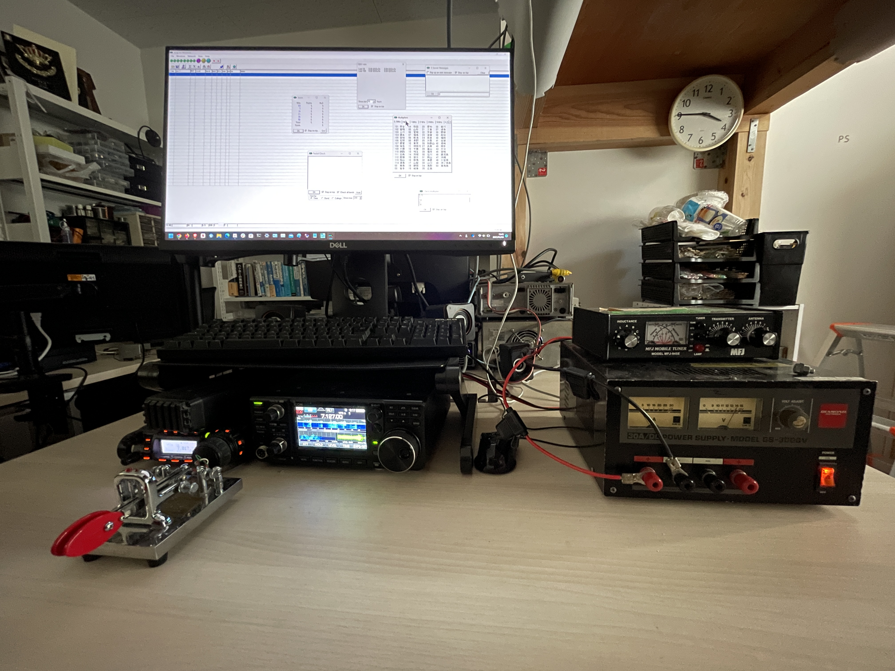
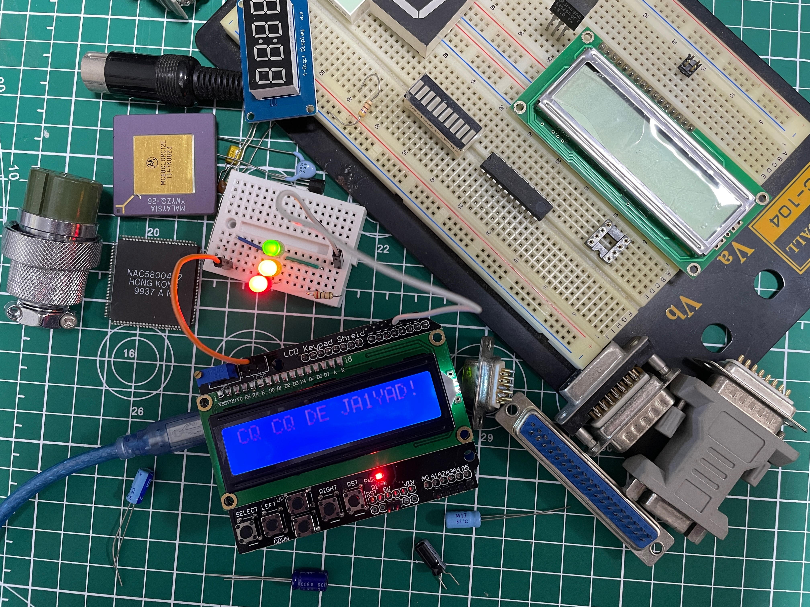
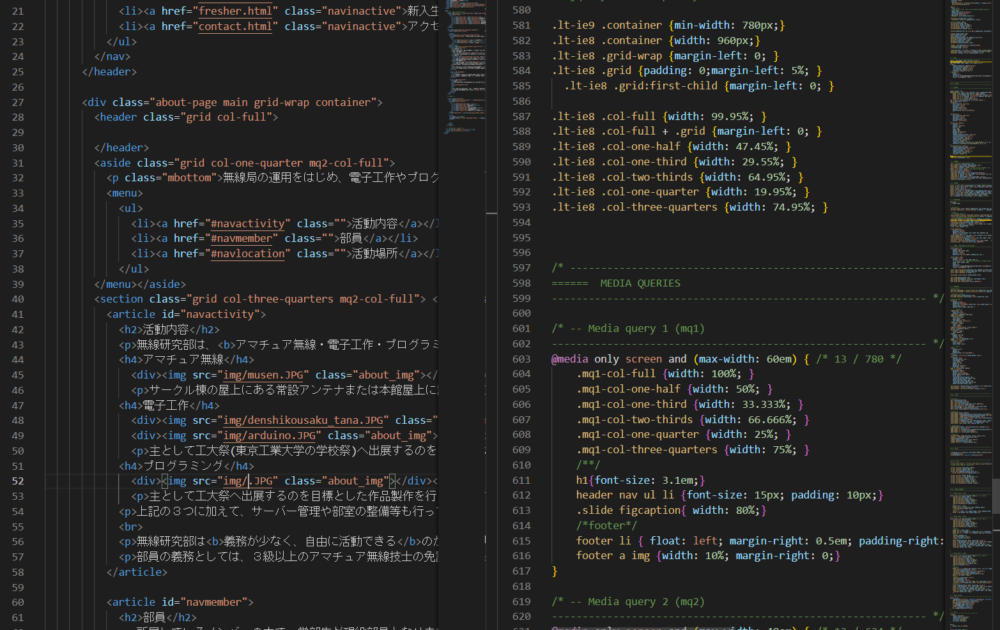

活動内容
無線研究部は、アマチュア無線・電子工作・プログラミングを中心に活動する東京科学大公認の技術系サークルです。
アマチュア無線

東1号館の屋上にある常設アンテナまたは本館屋上に設置するアンテナによる無線交信、及び年に数回あるコンテストへ参加しています。くわしくはこちらから。
電子工作

主として工大祭(東京科学大学理工学系の学園祭)へ出展するのを目標とした作品製作を行っています。部室には大量の電子部品、マイコン、Arduinoや工具が揃っており、設備は十分整っています。
プログラミング

主としてホームページやサーバーの管理・更新と、工大祭へ出展するのを目標とした作品製作を行っています。後者に関しては、各個人が自由に活動していて、初心者向け講習会も開かれます。
上記の３つに加えて、サーバー管理や部室の整備等も行っています。
無線研究部は義務が少なく、自由に活動できるのが特徴です。そのため、他サークルとの兼部やアルバイト、学業、その他趣味などとの両立がしやすいです。普段は好きな時間に部室に集まって自由に活動をしています。なお、おおまかな年間予定についてはこちらをご覧ください。
部員の義務としては、３級以上のアマチュア無線技士の免許の取得と年３回のコンテストへの参加・月１回の部会参加（オンライン参加可）・部費の支払いのみとなります。部会では、各月の会計報告とイベントの案内、企画や日程調整等を行います。